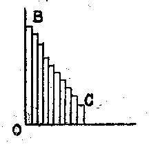
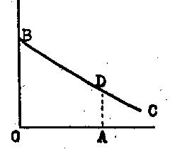
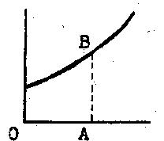
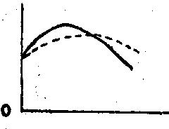
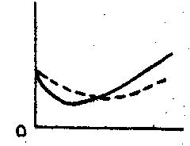
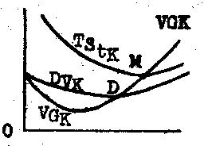

Librairie de Médicis — 1948 (deuxième édition)
par Richard von Strigl
traduit par P. Ochwald
Celui qui alimente un marché en y vendant ses produits comparera les frais que lui causent soit l'achat, soit la fabrication de sa marchandise, avec le prix qu'il peut obtenir. L'offre d'une marchandise dépendra donc finalement (après un certain temps) desdits frais. La courbe des coûts est une "courbe potentielle de l'offre". En établissant ce fait, nous nous libérons dès lors de nos considérations sur l'offre existant en permanence sur le marché, et nous abordons comme problème la dynamique du développement de cette offre. Disons de suite que deux facteurs fort différents interviennent dans le calcul des coûts de production, à savoir :
1. Le montant du prix des moyens de production dont on dispose pour fabriquer le produit.
2. L' "efficience" des moyens de production, c'est-à-dire le rapport entre la grandeur des sommes employées pour les mettre en oeuvre, et la grandeur de ce qu'on produit.
Si l'on peut admettre que les prix des moyens de production sont donnés, c'est cette efficience seule qui entrera en ligne de compte pour le développement de l'offre. En examinant les choses sous cet angle, nous allons d'abord mettre au premier plan l' "efficience" des moyens de production. Cette façon de procéder est justifiée, car — nous le verrons bientôt, — les prix des moyens de production ne sauraient être considérés comme indépendants de leur efficience.
Il s'agit donc de savoir quel rapport existe entre la quantité des moyens de production employés et la quantité des produits obtenus. Examinons cette question sous l'aspect d'une augmentation ou d'une diminution de la production. Trois éventualités se présentent :
1. L'emploi des moyens de production est proportionnel à l'importance des quantités produites. Si donc nous voulons étendre la production, nous devrons augmenter nos moyens de production dans le même rapport ; si nous voulons la diminuer, la quantité de nos moyens de travail devra diminuer proportionnellement (produit proportionnel = frais constants).
2. Une augmentation de la production n'est possible qu'avec une augmentation des moyens de travail proportionnellement plus grande (produit en diminution = frais en augmentation).
3. La grandeur du produit croît plus vite que l'augmentation des moyens de production (produit en augmentation = frais décroissants).
Une discussion copieuse s'est engagée au sujet de la constitution du revenu. Comme résultat, on a admis en général qu'il y avait excès dans certaines parties constitutives du revenu. On a parlé d'excès ou de prépondérance des revenus constants, ou aussi des revenus en diminution, et même enfin des revenus en augmentation. Dans chacune de ces opinions, il y a un fonds de vérité : il n'y a qu'à déterminer clairement dans quelles conditions chacune de ces opinions est justifiée. Un autre résultat de cette discussion, souvent énoncé, revient à dire que pour chaque espèce de production, les frais sont constitués d'une façon caractéristique. L'opinion la plus générale est que l'agriculture se caractérise par des revenus en diminution, l'artisanat par des revenus constants, et l'industrie par des revenus croissants. Il y a aussi un fonds de vérité dans cette opinion, mais il serait certes hasardeux d'en faire une règle générale. Toutefois, poursuivant notre étude des frais et du revenu, nous commencerons par exposer ce qu'on entend par la "loi du produit décroissant du sol".
Dans la production agricole (par exemple dans la culture du blé), entrent trois groupes de moyens de production : la terre, le travail humain, et enfin un troisième groupe qui peut avoir une composition très variée : certains minéraux (semences, fumier), divers outils et machines, force motrice fournie par les bestiaux ou par des machines. Pour simplifier, nous négligerons d'abord ce troisième groupe, car il sera possible plus tard de l'introduire très facilement dans le schéma de notre étude. Quant aux deux premiers moyens de production, le sol et le travail, il faut faire une distinction importante pour la suite.
Le sol qui dans un pays déterminé se trouve à la disposition de la production agricole est donné une fois pour toutes (sauf gains de terrains provenant de défrichements, etc.). Si le pays est peu peuplé, la terre utilisable ne sera pas exploité en totalité, mais si la population augmente, on atteint bientôt un état de choses où il n'y a plus de terre "libre" disponible. C'est depuis longtemps le cas chez la plupart des "anciens peuples civilisés", où tout le sol est employé. Mais si on considère l'économie mondiale, la situation n'est pas la même. Aujourd'hui encore, il existe dans le monde de vastes territoires avec d'excellentes terres disponibles, mais encore en friche à cause de la densité (relativement) faible de la population. Par la suite, nous pourrons introduire dans notre étude le cas du sol non employé, mais pour l'instant nous parlerons du cas d'un pays où toute la terre arable est cultivée.
Il est donc clair que dans ces conditions une augmentation du produit de la terre ne sera possible que par un forcement du travail du sol, c'est-à-dire en augmentant les autres moyens de production sur un terrain donné. Ces "autres moyens" sont d'abord le travail lui-même. Le travail est donc à considérer comme un "facteur variable" par rapport au sol considéré comme facteur fixe donné.
Voici maintenant la thèse que nous allons exposer, thèse souvent mal comprise, mais d'importance infiniment étendue, car elle détermine en principe le sort de l'humanité. Elle s'énonce comme suit : Toutes choses restant égales, l'augmentation continue des travaux sur un même terrain produit des revenus toujours plus faibles. La forme habituelle, dont les termes constituent un non-sens, "loi du revenu décroissant de la terre", devrait s'énoncer exactement "loi des suppléments décroissants du revenu des travaux additionnels". On a tenté de démontré le bien-fondé de cette thèse par les trois moyens que voici :
1. On a examiné empiriquement la façon dont les revenus de l'agriculture se constituaient, et on a trouvé que cela confirmait ce qui a été dit. L'expérience générale qui découle des enseignements de l'histoire, confirme du reste notre thèse, disons notre théorème.
2. On a cherché à rendre cette thèse plausible par des considérations techniques et scientifiques. Si nous observons comment les plantes poussent sur le sol, nous voyons une série de facteurs concourir à leur croissance d'une manière purement physique ou matérielle. La fertilité du sol, avec les matières nourricières qu'il contient, ensuite la pluie et le soleil, etc., et enfin le travail humain. Si maintenant, parmi tous ces facteurs, un seul, le travail, se trouve accru, cela signifie que la part des autres facteurs à la croissance des végétaux ne se trouve pas augmentée. L'accroissement unilatéral sans accroissement simultané des autres facteurs constitutifs du produit ne peut pas entraîner une augmentation des produits du sol correspondant à l'accroissement du travail.
3. Mais une preuve toute théorique sera décisive pour fixer nos idées. L'argumentation — quelque peu compliquée dans ses dernières finesses — tend à établir que le sol ne devrait pas être un bien matériel, et que l'on ne devrait rien payer pour lui, si l'accroissement du travail amenait avec lui un revenu proportionnel ou même supérieur. L'idée-mère du raisonnement est très simple.
Un paysan possède un champ et le cultive en y consacrant un certain travail. Supposons que pour un travail de 1 000 journées (A), on puisse obtenir un revenu de 200 unités de production (E). Si maintenant la loi du revenu décroissant ne jouait pas, un doublement des heures de travail aurait pour résultat un revenu double, ou même supérieur. Ainsi, 2 000 A produiraient au moins 400 E. Mais il est avéré que chaque paysan est "affamé" de terre, qu'il préfère posséder trop de terre que trop peu, qu'il achète volontiers du terrain supplémentaire dès qu'il le peut, et que jamais il n'est disposé à céder de bon gré quelque chose de son bien. Le paysan attend donc d'une augmentation de terrain un revenu supérieur, il craint une diminution de revenu si son terrain diminue. Supposons que notre paysan achète maintenant un terrain de la même grandeur et de la même qualité que celui qu'il a déjà cultivé. S'il dépense de nouveau sur ce terrain 1 000 A, le revenu sera 200 E. S'il cultive les deux terrains ensemble, en y employant 2 000 A (1 000 A sur chaque terrain), il ne produira pas plus de 400 E. Et pour obtenir ce revenu, il a dû prendre à sa charge l'achat d'un terrain. S'il était donc possible de toucher 400 E avec 2 000 A, sur le terrain primitivement en sa possession, c'est-à-dire, si doublement des dépenses en travail représentait aussi un doublement du revenu, le paysan n'aurait aucun intérêt à acquérir de nouveaux terrains, avec lesquels, moyennant un supplément de travail de 1 000 A, il ne peut obtenir qu'un supplément de revenu de 200 E. Il est ainsi démontré que, lorsqu'il s'agit de mettre des terres en valeur, le travail doublé produira un revenu moins que doublé.
Cette façon de démontrer la loi du "revenu agricole décroissant" nous permet dès lors de faire une grande généralisation, et cela sans difficulté aucune. Nous avons raisonné en partant d'une "combinaison productive" du sol et du travail. Nous pouvons dans notre raisonnement mettre à la place des expressions de sol et travail la désignation de n'importe quel autre moyen de production, ou encore plus généralement, une formule générale pour des moyens de production, pour lesquels on paie quelque chose dans une exploitation. Si nous partons d'une combinaison des moyens de production P1 et P2, en raisonnant comme ci-dessus, l'augmentation de l'un des deux — l'autre restant constant — devra signifier que l'augmentation du revenu va décroître. Il est indifférent qu'il s'agisse de tel ou tel moyen de production. La loi des augmentations décroissantes des revenus est un principe qui vaut généralement toutes les fois qu'il y a coordination entre moyens de production. Si l'un d'eux restant constant, l'autre est augmenté (ou, allant plus loin, si un groupe de moyens de production étant constant, un autre groupe s'accroît — cette extension nous est permise), le revenu croît plus lentement que la grandeur du facteur variable. Par la suite, nous aurons encore à nous occuper de la signification de ce principe général et nous aurons encore à faire deux réserves importantes à deux reprises, pages 43 et 56. Mais pour l'instant, nous allons encore généraliser dans un autre sens notre théorème du revenu décroissant de la terre.
Dans la démonstration précédente, page 37, nous avons négligé un groupe de moyens de production employé dans l'agriculture. Si nous admettons que tous ces moyens de production peuvent être mesurés à une même échelle,, en anticipant sur plusieurs choses que nous n'expliquerons que plus tard, et en désignant tous ces moyens par l'expression de "capital", nous pouvons, poursuivant notre démonstration, dire que l'augmentation d'autres moyens de production que le travail, sur un sol donné, — c'est-à-dire l'augmentation des capitaux consacrés à exploiter ce sol —, est soumise au principe des revenus décroissants. Par cette généralisation, la loi des revenus de la terre sera généralement formulée comme suit : Si les dépenses en capitaux et en travail augmentent pour exploiter un terrain donner, le revenu augmente moins vite que l'accroissement des "dotations" consacrées à ce terrain en capital et en travail. Et maintenant, passons à l'application importante de cette loi, mais dont il sera nécessaire de mentionner aussi la première restriction.
Il s'agit de la loi de Thomas Malthus (1798) sur le peuplement, dont on a souvent dit qu'elle était en même temps "célèbre et mal famée". le raisonnement est à peu près le suivant : On a observé que la population d'un pays double environ en 25 ans. le doublement de la population représente aussi un doublement des forces de travail. Suivant la loi du revenu, le produit de la terre doit augmenter plus lentement que la population. Leur proportion est déterminée par les deux séries suivantes :
Rapport de l'augmentation de la population :
| 4 | 8 | 16 | 32 | 64 |
Mesure de la grandeur du revenu :
| 4 | 6 | 8 | 10 | 12 |
L'accroissement de la population est représentée par une série comportant une progression géométrique, l'accroissement du revenu a lieu suivant une progression arithmétique. Mais il est clair que cette représentation par les chiffres n'a pas une signification décisive. Si la population augmente en général, elle double dans un certain laps de temps, que ce soit 25 ans, ou plus, ou moins, c'est secondaire. L'augmentation des "mains" indique toutefois que, suivant le principe du revenu décroissant, l'augmentation des revenus sera en retard sur l'augmentation des habitants. La divergence toujours plus forte qui se produit entre les deux séries montre alors avec netteté les conséquences qui vont en découler : Une population qui augmente signifie que les hommes seront moins à leur aise. La pauvreté, la misère seront la suite naturelle de ce développement, si des guerres ou des épidémies ne viennent pas décimer périodiquement les peuples. Pour éviter ces freinages "répressifs", Malthus préconisait la limitation des rapports sexuels : le moderne "Néo-Malthusianisme" demande des mesures préventives dans ce domaine. Mais si nous observons les faits de plus près, nous verrons que cette loi de la population renferme une grosse erreur de construction à la base qui permet de mettre en doute la valeur trop généralisée du principe posé par Malthus. On montrera que la loi de la population ne peut avoir son véritable effet que dans des circonstances tout à fait déterminées. La faute de construction dont nous parlons consiste en ce que les deux séries dont il s'agit, celle de l'augmentation des habitants et celle de l'augmentation du revenu, ne peuvent pas être rapprochées sans certaines réserves. L'augmentation du nombre des habitants est un phénomène qui est typiquement "dynamique" par nature, et qui s'accomplit dans un laps de temps très prolongé. Si on considère un pareil événement, la loi du revenu décroissant ne peu pas être appliquée sans réserves.
Au cours des siècles, les connaissances des hommes touchant les méthodes techniques de la production se sont considérablement enrichies. L'emploi de nouvelles connaissances techniques signifie que le revenu du travail s'accroît. Si nous nous souvenons de la manière dont nous avons démontré la loi du revenu, il apparaît clairement que nous ne pouvons prouver sa valeur que pour un état momentané des connaissances techniques. Si le paysan dont nous avons parlé apprend à connaître une nouvelle technique de la production, l'application de cette nouvelle méthode conduira à un accroissement du revenu. Cela n'a en réalité rien à voir avec le "revenu décroissant". le fait qui ressort de notre démonstration est uniquement celui-ci : Lorsqu'on aura acquis les nouvelles connaissances techniques, la loi du revenu décroissant agira juste comme auparavant. Mais durant la période transitoire qui résulte d'une nouvelle technique de la production, le revenu augmente, et cela interrompt en quelque sorte l'effet de la loi générale du revenu décroissant. Après acquisition des procédés nouveaux, la loi du revenu a conservé sa valeur pour un niveau plus élevé du rendement. C'est ce fait dont nous avons rendu compte, lorsque, formulant notre thèse, nous avons dit "toutes choses étant à part cela égales". Cette réserve, qui doit s'appliquer dans tout le domaine de la science des revenus, devra désormais être énoncée exactement comme suit : "la loi du revenu n'est valable que si les données touchant les méthodes de production sont stationnaires" (première réserve de la loi générale du revenu, voir pages 42 et 56). De nouvelles méthodes de production peuvent causer une forte augmentation des revenus. Cela signifiera que dans la série ci-dessus, qui représente la mesure du revenu, cette grandeur peut augmenter brusquement à un certain moment.
Un deuxième facteur, qui n'est pas exprimé dans la loi du peuplement, est le suivant : L'accroissement des revenus peut résulter non seulement de l'augmentation du nombre des habitants, mais encore d'un approvisionnement plus fort de la population en capitaux. Si le capital croît dans une proportion plus forte que la population, il est possible que l'on atteigne un accroissement plus fort en revenus, même si les données techniques restent stationnaires.
On se demandera si ces considérations ne contredisent pas la loi du peuplement ? Non certes ! Ce qui est nécessaire, c'est de tenir simplement compte des réserves faites. La population en accroissement se heurtera constamment "à la limite de l'espace des vivres", si les connaissances des hommes ne s'étendent pas dans le domaine des méthodes de production, et tant que ce ne sera pas le cas, et si les capitaux ne croissent pas plus vite que la population. Nous sommes forcés de reconnaître la réalité de cette loi du peuplement, avec les restrictions susdites, telle qu'elle agit dans les contrées où une tendance constante de la population à s'accroître est liée à une limitation rigide des moyens de production. Ce qui se passe dans bien des régions de l'Asie montre avec une netteté parfaite l'effet de la loi du peuplement, et nous confirme indirectement l'exactitude de la loi générale du revenu. On peut aussi montrer qu'à maintes époques du développement de l'économie européenne, et même tout récemment dans certains pays d'Europe, la loi du peuplement a agi de même. Il y a eu des temps où la disparition de grandes masses d'hommes par la peste a été un moyen radical de supprimer la pression trop forte de la population dans une économie stationnaire. En contrepartie, nous voyons surtout ce qui s'est passé au XIXe siècle, lorsque dans la plus grande partie de l'Europe une population qui augmentait très vite a pu être traitée toujours mieux, parce que l'extension continuelle des connaissances techniques, la richesse croissante en capitaux, et les rapides progrès effectués par la division du travail entre les États (ce point sera traité), tout a causé un accroissement toujours plus fort du revenu du travail. Mais ici, notons une conséquence importante en matière d'économie politique, qui découle de notre démonstration. Une population croissante ne peut améliorer son genre de vie, ou même le maintenir, que si les méthodes de production sont perfectionnées et si l'équipement en capitaux augmente. En même temps, apparaîtra ici le non-sens d'une politique économique qui tend à une augmentation de la population et qui néglige ou retarde l'amélioration du rendement du travail, sans vouloir avouer que son effet ne peut être qu'un resserrement progressif de l'aisance des habitants.
Le fait établi qu'une extension de la production n'est possible que par un accroissement relativement plus fort des dépenses, peut encore être constaté dans deux autres cas, que nous voulons brièvement traiter ici, en les rattachant à l'étude du rendement décroissant.
1) Le sol dont la production dispose est de qualité différente. Les qualités les moins bonnes exigeront plus de dépenses en travail (et en capitaux) par unité de rendement. Donc, plus une population croissante rendra nécessaire un accroissement de la production, et plus le rapport entre les dépenses et le revenu sera défavorable, non seulement par suite de l'intensification progressive du travail de la terre, mais aussi pour une deuxième raison : parce que la production défrichera de plus en plus de mauvais terrain. (Ce que nous exposons relativement à la terre cultivable peut s'appliquer de suite à la mise en valeur d'autres richesses naturelles comme le minerai, le charbon, etc.)
2) Une population croissante tendra aussi toujours davantage à mettre en valeur des terrains plus éloignés des habitations. Dès lors, s'ajouteront aux dépenses nécessaires pour recueillir les produits du sol, celles causées par leur transport. Ces dépenses supplémentaires pèsent de nouveau défavorablement sur le rapport entre les dépenses et le revenu. Les charges que les produits du sol doivent supporter du fait des frais de transport jusqu'aux lieux de consommation, expliquent aussi que, même aujourd'hui, on n'ait pu mettre en exploitation toutes les terres cultivables dont le monde disposerait, et que souvent une bonne terre ne se trouve cultivée que peu intensivement pour la nourriture de la population clairsemée du pays lui-même.
Après avoir traité la question du revenu décroissant, nous pourrons parler très brièvement de la formule de l'accroissement constant du revenu. Nous partirons d'un cas où les données sont autres que là où on admettait que le revenu allait en diminuant. Cette marche décroissante du revenu se produit lorsque l'un des moyens de production (la terre) n'est pas susceptible d'accroissement, et que seul est possible l'accroissement d'un deuxième moyen de production (par exemple le travail), ou d'un groupe de moyens (par exemple le travail et le capital). Mais là où une extension de la production est possible de telle manière que tous les moyens de production, qui se rencontrent par hypothèse en quantité suffisante, peuvent être accrus dans la même proportion, on peut attendre de prime abord que le revenu augmente dans le même rapport que l'augmentation des moyens de production. Si, par exemple, un atelier de tailleur a employé dans un local cinq machines avec cinq ouvrières, et agrandit son affaire de façon à occuper dans une deuxième pièce cinq autres machines et cinq autres ouvrières, le doublement de ces moyens de production aura sans doute pour effet un doublement du revenu. En général, on pourra dire que ces circonstances se rencontreront très souvent dans l'artisanat, de sorte que l'affirmation suivant laquelle les "revenus proportionnels" sont en général caractéristiques pour cette production artisanale, est justifiée. Nous rappelons ici que deux conditions sont supposées :
1) Tous les moyens de production peuvent être augmentés dans la même proportion.
2) L'accroissement de la production ne provient pas d'un changement dans les méthodes de travail. Après ce que nous avons dit sur les phénomènes du revenu décroissant, il est inutile d'y revenir. Mais maintenant une remarque sur un autre phénomène d'importance s'impose.
Imaginons ce qui se passe dans une petite entreprise artisanale, où une ouvrière est occupée à fabriquer des fleurs artificielles. Cette affaire va s'agrandir de telle sorte que dix ouvrières environ y seront occupées. Le produit reste semblable, ainsi que la technique de ma production — travail à la main et quelques outils très simples. Rien n'est modifié en principe. Mais le travail de fabrication change néanmoins, en ce que désormais les dix ouvrières, assises côte à côte à une longue table, vont se partager les opérations. Chaque ouvrière ne fera plus la fleur artificielle du commencement à la fin, maos "l'objet" à fabriquer passera d'une main à l'autre ; chaque fois, une certaine partie de la fabrication sera effectuée, et ce n'est qu'en quittant les doigts de l'ouvrière qui a donné le dernier tour de main que l'objet est terminé. Ces procédés ont été décrits souvent pour maintes fabrications et en grand détail. L'exemple de la fabrication des épingles, dépeinte par Adam Smith, est célèbre, et aujourd'hui, on lit souvent des articles sur la fabrication des automobiles "à la chaîne". Remarquons, à ce propos, que ces exemples montrent presque toujours un progrès dans la division du travail, rattaché à une augmentation de richesse en capitaux, de sorte que le seul fait de la division du travail n'y apparaît plus si clairement. Dans notre exemple des fleurs artificielles on remarque deux choses :
1) Le "partage" d'un ensemble de travaux fait jusqu'alors entièrement par une seule personne, en travaux partiels, à effectuer par diverses ouvrières. En poussant cela à l'extrême, on en arrive à ce que chaque ouvrier ou ouvrière n'a plus à effectuer qu'un seul tour de main, qu'un seul mouvement, toujours renouvelé, pour chacun des objets en cours de fabrication qui passent les uns à la suite des autres. Le procédé tendant à diviser toujours davantage le travail à effectuer aboutit donc à ce que chaque ouvrier "cède" en quelque sorte à d'autres ouvriers une part toujours plus grande des opérations que la fabrication comporte.
2) La division du travail comporte en regard une organisation embrassant toutes les opérations de détail. Cette organisation est ici renfermée dans l'exploitation elle-même. Dans d'autres circonstances, elle pourra prendre des formes différentes.
La division du travail la plus primitive apparaît déjà dans les origines de l'histoire humaine, sous forme d'une division "naturelle" du travail entre l'homme et la femme. Déjà dans la "grande famille" (tribu) des temps très anciens, et dans l'exploitation de la propriété agricole fermée, on trouve une division du travail toujours plus poussée. Son développement a conduit ensuite à la création des métiers les plus simples. Si, tout d'abord, la division du travail a trouvé dans une économie fermée son épanouissement naturel dans les unions de travailleurs (corporations), on a vu en outre se développer une spécialisation des diverses exploitations économiques dans un espace limité de la production ; ensuite ces diverses exploitations particulières s'unirent à d'autres, et finalement cette union des diverses exploitations particulières pratiquant par échanges la division du travail a déterminé la structure de notre économie actuelle.
Dès lors il est clair que l'application de ce principe contribuera beaucoup à accroître le rendement du travail lui-même. Cela s'est toujours vérifié à l'expérience, et on pressent de suite l'économie de temps provenant de ce qu'il n'y a plus à changer d'outils, l'adaptation meilleure de l'ouvrier à un travail spécialisé ; tous ces facteurs agissent dans le même sens. Il est hors de doute que ce qu'on nomme progrès technique n'a pas seulement consisté à utiliser des découvertes nouvelles dans le domaine de la nature physique, mais aussi, pour une grande part, à renforcer toujours davantage ce grand principe.
Le rôle que joue la division du travail ressort du fait qu'elle a permis une augmentation très considérable du revenu. Personne ne pourra mettre en doute que la possession de connaissances techniques même considérables, sinon parfaites, n'aurait jamais pu assurer à une économie domestique fermée (relativement petite), un rendement aussi élevé des moyens de production. Et de très nombreux produits, dont l'emploi est devenu tout naturel, même chez des gens très modestes, ne pourraient être fabriqués dans une application fort étendue des avantages du travail divisé. En même temps, la division du travail a conduit des groupes toujours plus importants à s'unir plus étroitement dans un but économique. Mais cette union entraîne aussi une dépendance. Dépendance d'abord générale d'une économie envers une autre. Ensuite, dépendance de la main-d'oeuvre, les ouvriers spécialisés étant soumis toujours davantage aux vicissitudes provenant du marché du travail. Enfin, des valeurs morales, honorées et entretenues par les corporations dans le respect du métier, ont été perdues à la suite des progrès de la division du travail, et n'ont pas été remplacées de façon équivalente. Ce sont là des inconvénients qui s'opposent, d'un point de vue social général, à l'accroissement du rendement de la production et à la possibilité de mieux faire vivre la population. Certaines personnes, à la tournure d'esprit romantique, voudraient que l'on fasse maintenant machine arrière dans ce domaine. Elles devraient être assez honnêtes avec elles-mêmes pour convenir que l'acquisition d'une plus grande indépendance de l'ouvrier sous ce rapport ne serait possible qu'au prix d'un abaissement de l'aisance générale. Nous y reviendrons du reste en traitant un autre sujet. Le lecteur se souviendra ce que nous avons dit sur les relations entre le revenu décroissant et le progrès technique. A cela, il conviendrait d'ajouter une remarque : Si un progrès quelconque dans la connaissance de méthodes techniques est capable de faire augmenter le rendement, là où la production est soumise à la loi du revenu décroissant, il en est exactement de même du développement de la division du travail, qui est l'équivalent d'un perfectionnement technique. Mais il semble inutile de nous étendre plus sur ce sujet.
Passons maintenant au troisième cas de la formation du revenu, celui de revenus qui augmentent. Pour simplifier notre étude dans ce domaine, où l'analyse rencontrera quelques difficultés, nous utiliserons de nouveau une représentation graphique, en nous basant sur ce qui a été exposé pour la constitution des revenus étudiés précédemment.

Fig. 3. — Parts décroissantes de revenu.

Fig. 4. — La courbe du revenu marginal.
Une représentation du revenu décroissant est donnée dans la figure 3. Si nous supposons qu'un moyen de production, par exemple le sol, soit donné en quantité déterminée, et si nous ajoutons ensuite successivement par unités distinctes, un autre moyen de production, par exemple le travail, chaque introduction de ce facteur variable représentera un supplément de revenu qui deviendra toujours plus faible. Les diverses parties de ce revenu sont représentées dans la figure 3 par les bandes étroites, verticales, qui correspondent aux accroissements du facteur variable porté, lui, sur l'axe horizontal. le même phénomène apparaît de façon simplifiée dans la figure 4. Nous supposerons que l'unité du facteur variable, que nous voulons introduire successivement dans la combinaison productive, est très petite. La ligne en escalier BC de la figure 3 se transforme alors en une courbe continue. Si l'on introduit ce facteur variable dans la quantité OA, le revenu complet est alors représenté par la surface OABD, le revenu de la dernière unité ajoutée, par la distance AD (c'est dans cette ligne que nous retrouvons en réalité la bande étroite correspondante de la figure 3, qui est supposée s'amenuiser jusqu'à devenir une ligne). Nous voyons clairement ce que représente chaque point de la courbe. Si à la longueur OA correspond, par exemple, l'emploi de 20 unités du facteur variable, en rapport avec une quantité donnée du facteur constant, la grandeur de l'accroissement du revenu qui correspond à l'introduction du vingtième exemplaire du facteur variable est AD. Nous concluons de l'inclinaison de la courbe BC que l'emploi de chaque unité, ou de chaque nouvelle partie de ce facteur variable amène un supplément de revenu décroissant ; nous en concluons aussi que la perte de revenu que l'on constaterait en enlevant des unités de ce facteur variable, serait toujours plus grande à mesure qu'on poursuivrait cette suppression. Cette courbe BC sera maintenant désignée par l'expression "courbe de la limite des revenus", parce qu'elle indique de prime abord les "revenus marginaux" (suppléments, ou accroissements de revenus) qui résultent de l'augmentation progressive du facteur variable. La courbe des coûts marginaux est en réalité une réciproque de la courbe des revenus marginaux, et nous devons le mentionner ici, parce que nous l'utiliserons désormais dans nos raisonnements. Si nous nous demandons combien la fabrication d'une unité du produit coûte d'unités du facteur variable, nous trouverons qu'il en faut relativement peu. Si nous développons la production, nous devrons — puisque le revenu est décroissant — employer toujours davantage du facteur variable pour chaque nouvelle unité du produit. Nous aurions alors, en réciproque, ou en contrepartie de la figure 3, un diagramme en escaliers qui montre de quelle façon la fabrication de chaque nouvelle unité du produit coûte toujours plus en facteur variable, par suite du revenu décroissant. Que voyons nous dès lors dans la courbe des coûts marginaux ? La figure 5 montre que si, par exemple, OA représente la quantité de 50 unités de production, la cinquantième unité de production exige une dépense en facteur variable représentée par la grandeur AB. Pour une extension de la production — cela se voit à l'aspect de la courbe des coûts marginaux — chaque nouvelle unité du produit exigera une dépense toujours plus élevée.

Fig. 5. — Courbe des coûts marginaux.
telle est la représentation du revenu décroissant. Nous n'avons rien à ajouter ici au cas des revenus constants. Dans le cas qui nous intéresse maintenant, celui des revenus croissants, la courbe des parts du revenu devra monter de gauche à droite tandis que celle qui représente les frais de production d'une unité supplémentaire du produit devra descendre de gauche à droite.
Toutefois, si cette façon dont les revenus et les frais se constituent ne peut jamais se constater aussi clairement dans l'économie pratique, elle est d'une importance extrême dans une double éventualité : D'une part, une combinaison de parties de revenus en accroissement avec d'autres en diminution, et ensuite une combinaison d'éléments luttant dans les frais, calculés sur ces données avec d'autres éléments concourant aux frais, et variant selon d'autres causes. Nous considérerons d'abord la première de ces combinaisons. Imaginons une usine complètement installée, par exemple une fabrique d'automobiles, comme constituant un moyen de production donné, lequel sera utilisé concurremment avec un deuxième moyen, le travail. Provisoirement, nous ferons abstraction complète de tous les autres moyens de production dont on aurait encore besoin. Il semble plausible que la marche à suivre pour arriver à un revenu serait alors à peu près la suivante. Si on n'emploie qu'un seul ouvrier, ou deux, ils n'arriveront guère à produire quoi que ce soit. Ils seront occupés complètement par les travaux de nettoyage et d'entretien. Pour commencer à produire vraiment, il faudra occuper un certain nombre d'ouvriers, et avec cela, le revenu du travail sera encore très petit, parce qu'une utilisation sérieuse, en rapport avec la grandeur des installations, n'est pas possible. Mais si on augmente progressivement le nombre des ouvriers, le revenu augmentera plus vite. Nous aurons donc à enregistrer des parts de revenu croissant à mesure que nous engagerons du personnel nouveau. Cela continuera jusqu'à ce que l'usine ait atteint un état correspondant à une certaine capacité, après quoi il faudra prévoir qu'une extension plus forte de la production deviendra toujours plus difficile. L'exploitation sera surchargée en certains points, et, si la production augmente encore, en des points toujours plus nombreux. L'extension de la production par un accroissement de la main-d'oeuvre provoquera à nouveau une diminution des revenus. En général, nous voyons donc une "branche" montante et une branche descendante de la courbe des revenus, auxquelles correspondent une branche descendante et une branche montante de la courbe des coûts marginaux (fig. 6 et 7). Cette marche du revenu est, suivant toutes les expériences faites, caractéristiques des industries qui ont fait de grandes immobilisations de capitaux. Lorsqu'on considère le seul revenu obtenu avant le maximum de la courbe de l'augmentation des revenus, on peut dire que cette production est caractérisée par le revenu croissant. Mais il ne faut pas oublier que cette tendance dans la marche des revenus a toujours une limite, et qu'alors elle est remplacée par celle des revenus décroissants. On ne saurait donc parler d'un principe de revenus croissants dans l'industrie, sauf si la production est occupée typiquement, pourrait-on dire, dans une proportion un peu inférieure au maximum dont nous avons parlé. Et nous verrons encore que cela ne peut être admis sans réserves.

Fig. 6. — Parts croissantes et décroissantes de revenu (en traits pleins). Courbe des revenus moyens (en pointillé).

Fig. 7. — Coûts marginaux décroissants montants (en traits pleins). Courbe des coûts moyens (pointillé).
Avant de passer à la démonstration générale concernant cette sorte de formation des revenus, faisons encore une très courte remarque : il est clair que des revenus croissants apparaîtront lorsqu'un facteur de production, dont la valeur est donnée de façon ferme, n'est pas utilisée à fond. Partant de là, on pourrait aussi se représenter cet état de choses comme existant dans une exploitation agricole. Si nous avons à cultiver un grand espace de terrain avec un tout petit nombre d'ouvriers, le revenu sera probablement très faible, et une augmentation de la main-d'oeuvre permettant une meilleure exploitation de ce sol amènera probablement avec elle des revenus en augmentation, jusqu'à ce qu'on atteigne un stade à partir duquel apparaîtra une chute des revenus. Certains lecteurs auront remarqué que, pour cet état de choses, nous n'avons pas renvoyé à notre démonstration générale de la formation des revenus en agriculture. On discerne facilement la raison pour laquelle nous ne pouvions pas le faire. Le revenu croissant ne peut pratiquement être que peu important, si le paysan n'est pas obligé de travailler tout le terrain. S'il n'y a que très peu de main-d'oeuvre et beaucoup de terrain disponible, il sera rationnel de ne travailler qu'une partie du sol et cela, avec une intensité correspondant à un revenu optimum. Si l'on augmente alors la main-d'oeuvre, on pourrait, parallèlement à cette augmentation, mettre en culture plus de terre. Le revenu monterait en ce cas dans le même rapport que le nombre des ouvriers, jusqu'à ce que tout le terrain soit cultivé. Ensuite, une extension suivie de la production serait soumise à la loi des revenus décroissants. (Aussi longtemps qu'il y a du terrain non cultivé de qualité semblable disponible, ce terrain est gratuit. Cela résulte de l'étude que nous ferons plus tard sur la fixation des prix des moyens de production.) Pour une installation d'usine une utilisation partielle ne sera (en général) pas possible, et le fait d'exploiter de façon irrationnelle une grande installation avec peu d'ouvriers aura pour effet de faire monter la courbe des revenus dans sa première partie, donc lors de l'augmentation de la main-d'oeuvre, à partir d'un point très bas. Mais ici, nous pouvons établir une formule générale qui permet de réunir les principes du revenu en accroissement et en diminution : la combinaison d'une quantité donnée d'un moyen de production avec une quantité croissante d'un autre moyen de production provoque une diminution des revenus si de nouvelles méthodes techniques (y compris les progrès dus à la division du travail) n'entrent pas en application (voir page 44, notre première restriction sur le principe du revenu décroissant), et si l'accroissement du facteur variable ne permet pas une meilleure utilisation d'un facteur fixe jusqu'à présent non employé à plein (deuxième restriction du principe du revenu décroissant, voir page 40). Cette deuxième restriction — il est intéressant de le noter ici — est important s'il existe un facteur de production consistant en immobilisations fixes de capitaux, cas général de la production industrielle, et aussi des industries extractives (mines).
Mais ce qui est avant tout caractéristique de la composition des coûts d'une industrie moderne, c'est que, dans cette industrie, non seulement cette façon dont les frais se constituent joue un rôle, avec emploi éventuel d'un facteur variable (en premier lieu le travail), mais aussi, et en plus, la combinaison de ces "coûts variables" avec d'autres éléments de dépenses. Deux d'entre eux entrent en ligne de compte. D'abord, ce qu'on nomme les frais proportionnels. Parmi ceux-là, on rangera les dépenses qui changent dans la même direction que les quantités produites par cette industrie. Par exemple, dans une fabrique d'automobiles, on emploiera en fer, acier, vernis, cuir, verre à vitres, etc., une certaine quantité par unité produite. Les dépenses pour ces frais varient donc dans le même rapport que la quantité fabriquée. Ces dépenses sont donc à compter en les ajoutant simplement les unes aux autres, et avec le même montant pour chaque unité. Ce groupe de facteurs entrant dans les coûts ne sera plus étudié par la suite. le deuxième élément de frais tout aussi important, est réuni sous la rubrique "frais fixes". leur caractéristique consiste en ce que la grandeur des dépenses est indépendante de celle du produit. Divisons-les de suite en deux groupes : d'abord les charges fixes de l'exploitation courante. L'entreprise a certaines dépenses en salaires et traitements qui sont indépendantes de ce qu'on produit. Par exemple, — pour citer deux cas limites —, il faudra payer régulièrement les traitements du directeur général et du concierge, qu'on produise peu ou beaucoup. Il en sera de même du chauffage d'une grande salle d'usine, toujours nécessaire, si toutes les machines tournent, ou seulement quelques-unes. L'étendue de ces charges fixes variera suivant l'organisation ou la construction de l'affaire. S'il existe par exemple dans l'usine une grande centrale à vapeur, qu'il faut chauffer, sans avoir égard au nombre des machines qui marchent, cela causera des charges fixes très sérieuses, tandis qu'une autre exploitation, ou chaque machine est actionnée par un moteur électrique, comptera les dépenses pour force motrice comme frais proportionnels. Dans un deuxième groupe de frais fixes entreront toutes les dépenses causées par la rémunération des capitaux engagés, frais d'intérêt du capital investi, et frais d'entretien de l'installation. Ce n'est que plus tard que nous pourrons donner des détails sur cette cause de dépenses, quand nous parlerons des questions de capital : pour le moment, nous les supposerons simplement données.
Il résulte des combinaisons de ces divers coûts que les totaux d'une production doivent être considérés comme une somme, comme l'addition d'éléments de frais différemment constitués. Le producteur devra se demander combien un objet produit par lui coûte au total. S'il veut répartir les frais fixes dans ce but, ce problème se réduira à un calcul simple. La grandeur des charges fixes est donnée, et indépendante de la grandeur du produit. Pour chaque quantité d'objets produits, la charge par unité en coûts fixes est égale à la somme des charges fixes, divisée par le nombre des unités produites. Si donc nous portons sur l'axe horizontal la quantité des unités produites, sur l'axe vertical les frais fixes, calculés par unité de production, nous aurons une courbe inclinée de gauche à droite. Les frais par unité sont d'autant plus faibles qu'on produit plus (la courbe est une hyperbole).
La question des coûts variables est un peu plus compliquée. Là, nous pouvons nous poser une double question, que nous allons traiter en partant de la courbe de la constitution des revenus. Si nous d'abord des revenus croissants, puis décroissants, la courbe des revenus (figure 6) nous montrera d'abord des "revenus marginaux". Donc l'adjonction de l'unité du facteur variable ayant tel ou tel rang produira tel ou tel accroissement de revenu, et cet accroissement montera d'abord, pour tomber ensuite. Il faudra voir maintenant — et c'est même fort important dans la pratique, comme nous le verrons en étudiant plus tard le calcul des frais, — il faudra, disons-nous, voir la grandeur moyenne du revenu produit par une certaine utilisation en facteur variable. La question va maintenant se poser pour la courbe du revenu moyen, qui correspond à une dépense en facteur variable, pour chaque quantité possible de ce facteur. Cette courbe du revenu moyen peut se construire sans difficulté spéciale en partant de celle de l'accroissement du revenu (fig. 6). Supposons qu'une première dépense en facteur variable produise un revenu déterminé. Il est clair que, dans ce cas, le "revenu moyen" sera identique au "revenu marginal". Ensuite, une deuxième dépense en facteur variable produit un revenu plus grand. En moyenne, le revenu de deux dépenses de facteur variable est donc plus petit que le revenu résultant de cette deuxième dépense, mais plus grand que le revenu provenant de la première. Pour une troisième dépense, qui représentera de nouveau une augmentation croissante de revenu, le revenu moyen augmentera encore, mais sera toujours inférieur à celui produit par cette troisième dépense, etc. La courbe du revenu moyen doit donc monter, mais demeurer au-dessous de celle de l'accroissement des revenus. Et si maintenant la courbe de l'augmentation du revenu atteint son maximum et commence à tomber, le revenu moyen croîtra encore toujours avec chaque nouvelle dépense de facteur variable, et cela, jusqu'à ce que le revenu marginal soit redescendu à la grandeur du revenu moyen. A partir de là, chaque nouvelle augmentation du facteur variable produira moins en augmentation de revenu que ce qui correspond à la moyenne atteinte jusque-là. La courbe du revenu moyen commencera dès lors à tomber après son point d'intersection avec la courbe du revenu marginal, mais restera au-dessus du tracé de la courbe du revenu marginal. Il est possible, et très facile, de reporter ce raisonnement dans la formule des grandeurs des coûts. La question ne se pose plus de savoir combien la création d'une unité supplémentaire coûterait comme dépenses en facteur variable, mais bien de savoir combien une unité produite coûte en moyenne pour chacune des quantités possibles, dépendant de la grandeur des dépenses en facteur variable. La courbe des coûts moyens aura un tracé (figure 7) qui sera au-dessus de la courbe des coûts marginaux, et commencera par tomber ; à son point le plus bas, elle coupera cette courbe dans sa branche qui commence à monter, et s'élèvera ensuite en restant au-dessous de celle-ci.

Fig. 8. — Composition des frais d'une entreprise avec immobilisation de capitaux fixes. (Coûts marginaux du facteur variable, VGK. Coûts moyens du facteur variable, DVK. Coûts totaux par objets fabriqués, TStK.)
Si maintenant nous voulons connaître les coûts totaux entrant dans une unité produite, — nous ferons aussi abstraction, pour simplifier, des frais proportionnels —, nous devrons additionner les frais fixes avec les frais variables qui y entrent aussi. Nous ferons cela en prenant pour base les frais moyens provenant du facteur variable, et en y ajoutant les frais fixes qui entrent chaque fois dans une unité de production : à cet effet, nous tracerons la courbe des frais marginaux variables (fig. 8). Dans la figure, non seulement la courbe qui indique la répartition des charges fixes par unité de production est tracée, mais la courbe des coûts totaux par pièce produite résulte de l'addition de ces grandeurs avec les frais moyens du facteur variable. Cette courbe nous montre maintenant combien coûte en moyenne l'unité du produit pour chaque grandeur possible de production. On voit, sur la figure, que cette courbe des coûts moyens totaux est coupée dans son point le plus bas par la courbe des coûts marginaux variables. Ici, il faut se dire que l'on ne peut parler d'une diminution de frais par extension de la production qu'à condition de maintenir cette production dans certaines limites. Si la production s'accroît, on atteint bientôt les points à partir desquels augmentent les frais variables, et ensuite les frais totaux par unité produite, et où le principe des revenus décroissants entre en jeu. Reste maintenant la question de savoir laquelle de ces courbes entrera finalement en ligne de compte comme courbe d'offre. Nous ne pourrons en parler que plus tard, lorsque nous étudierons les biens-capitaux.